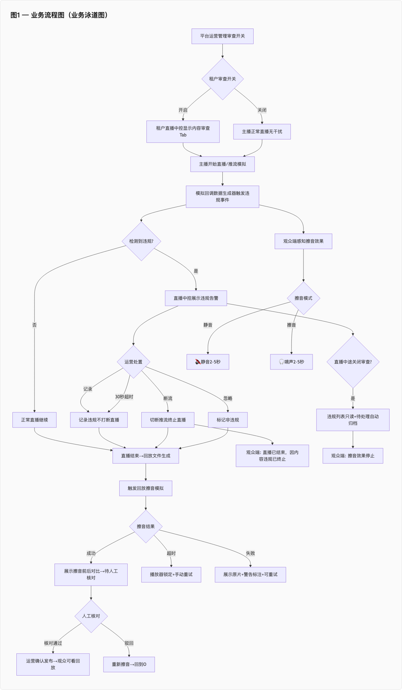
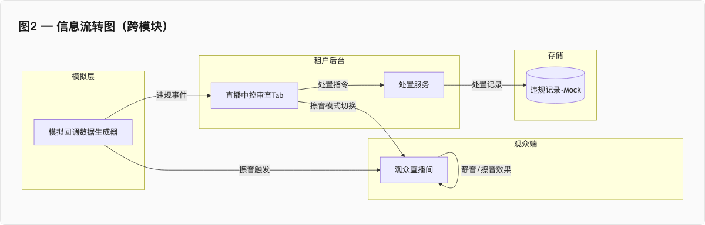
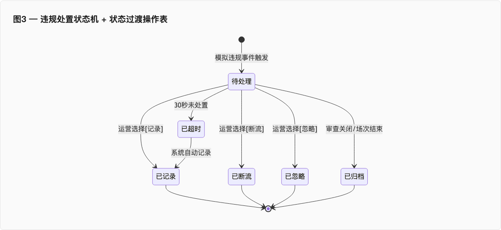
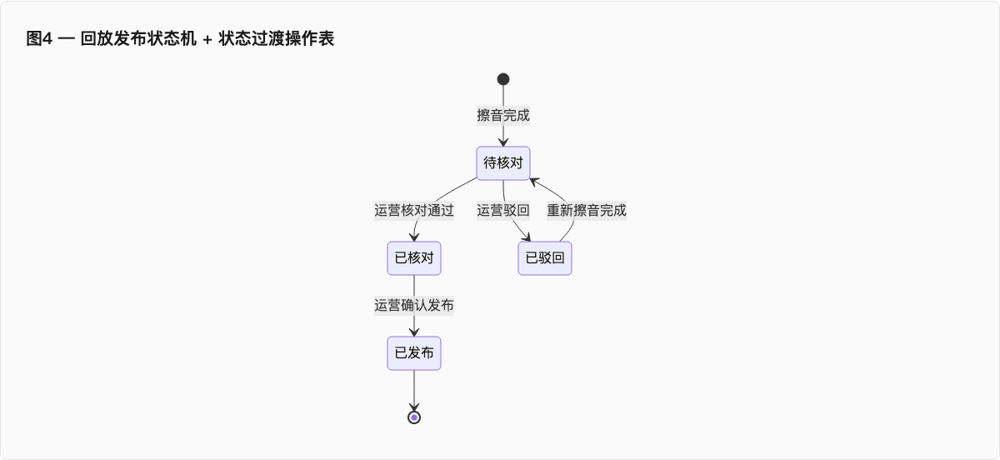
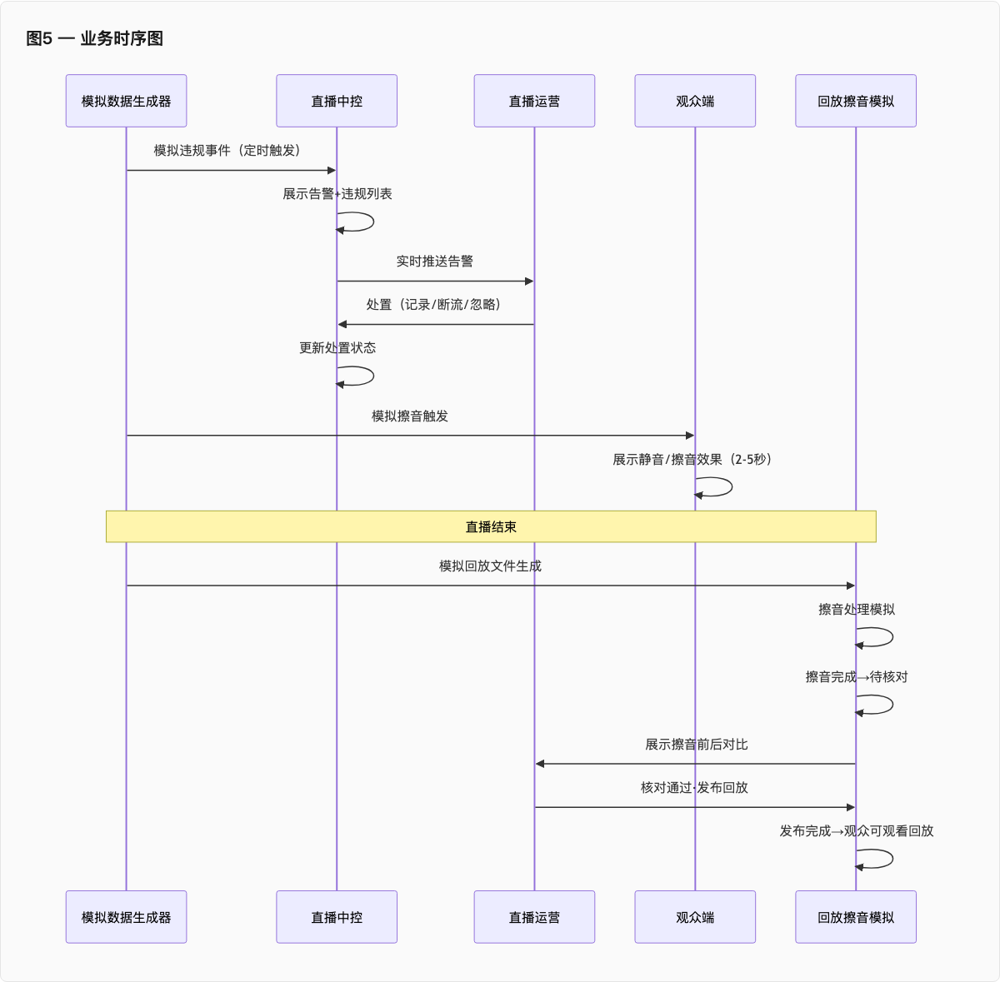
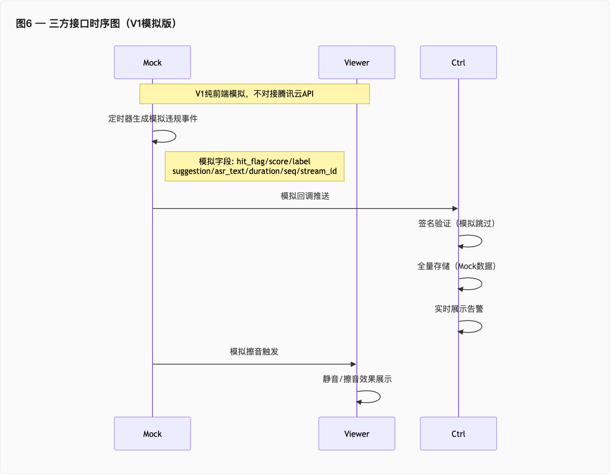
| 所属系统 | SAAS 平台 | 所属模块 | 内容审查 |
|---|---|---|---|
| 所属页面 | 租户管理列表（运营后台） | 页面编号 | PG-AUDIT-PC-001 |
| 功能编号 | FN-AUDIT-PC-001 | 参与人 | 平台运营人员 |
| 影响数据 | tenant.audit_enabled, tenant.mute_mode, tenant_audit_log, audit_switch_event | ||
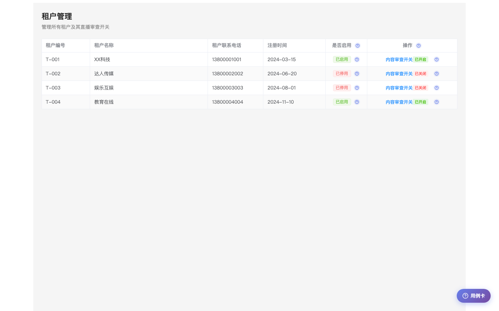
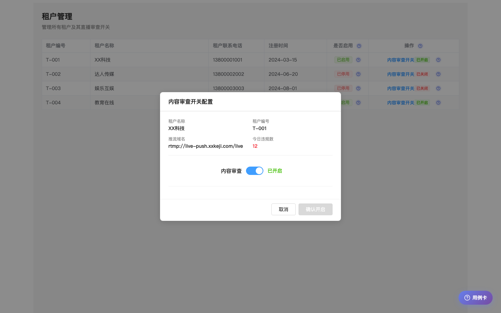
R: tenant.audit_enabled, tenant.mute_mode, tenant.today_violation_count
W: tenant.audit_enabled, tenant_audit_log, audit_switch_event
| 所属系统 | SAAS 平台 | 所属模块 | 内容审查 |
|---|---|---|---|
| 所属页面 | 直播中控内容审查 Tab / 历史违规列表面板 | 页面编号 | PG-AUDIT-PC-002 / PG-AUDIT-PC-004 |
| 功能编号 | FN-AUDIT-PC-002 / FN-AUDIT-PC-003 | 参与人 | 主播 / 运营人员 |
| 影响数据 | violation_record, live_stream.audit_status, callback_lost_event, disposal_log, live_stream.mute_mode | ||
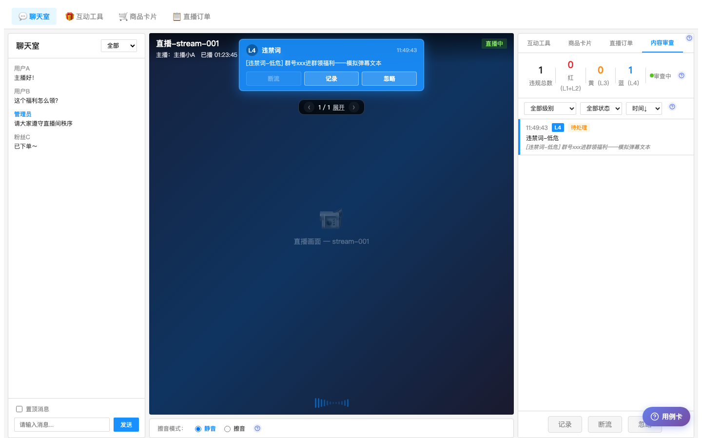
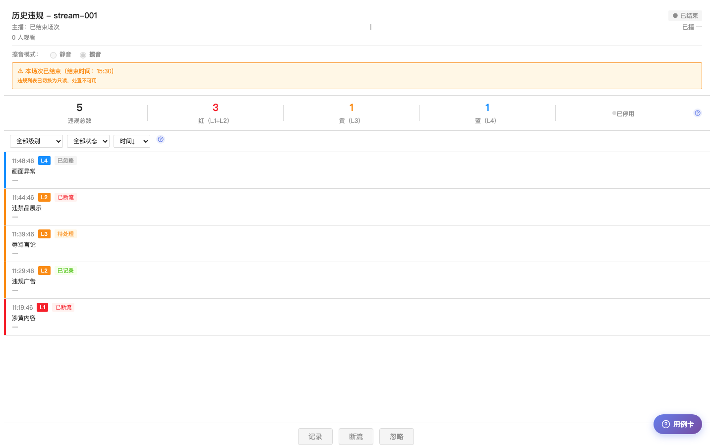
R: violation_record, live_stream.audit_status, live_stream.mute_mode, callback_lost_event
W: violation_record.disposal_status, disposal_log, live_stream.mute_mode, live_stream.audit_status
| 所属系统 | SAAS 平台 | 所属模块 | 内容审查 |
|---|---|---|---|
| 所属页面 | 回放详情审查页（租户后台） | 页面编号 | PG-AUDIT-PC-003 |
| 功能编号 | FN-AUDIT-PC-004 | 参与人 | 运营人员 / 审核员 |
| 影响数据 | replay.mute_task_status, replay.publish_status, replay.mute_segments, replay.mute_mode, violation_record, replay.audit_log | ||
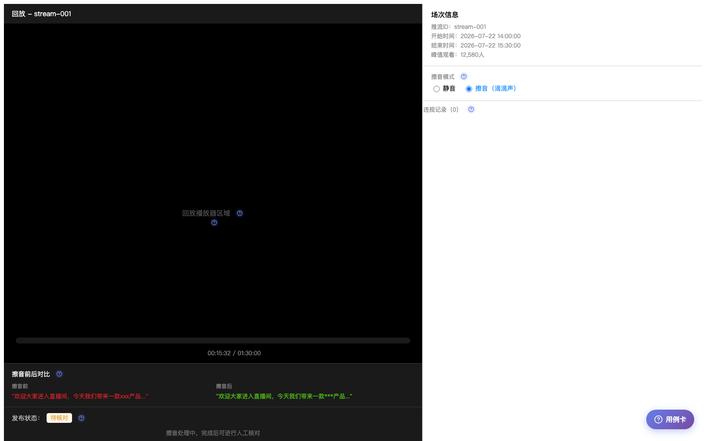
R: replay.mute_task_status, replay.publish_status, replay.mute_segments, violation_record, replay.media_url
W: replay.mute_task_status, replay.publish_status, replay.mute_mode, replay.audit_log
| 所属系统 | SAAS 平台 | 所属模块 | 内容审查 |
|---|---|---|---|
| 所属页面 | 观众端直播间（H5/APP） | 页面编号 | PG-AUDIT-APP-001 |
| 功能编号 | FN-AUDIT-APP-001 | 参与人 | 普通观众 |
| 影响数据 | live_stream.mute_mode, callback_lost_event, live_stream.audit_status（只读） | ||
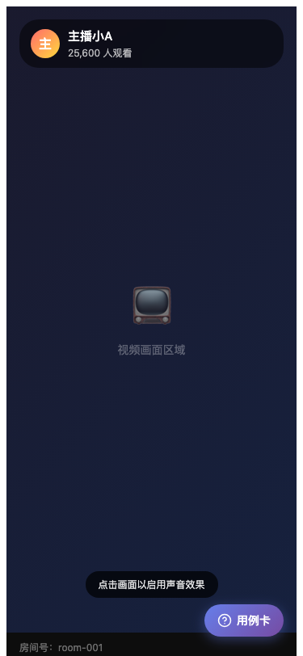
R: live_stream.mute_mode, callback_lost_event, live_stream.audit_status
W: 无（观众端只感知不写入）
| 所属系统 | SAAS 平台 | 所属模块 | 内容审查 |
|---|---|---|---|
| 所属页面 | 直播/回放管理列表（租户后台） | 页面编号 | PG-AUDIT-PC-005 |
| 功能编号 | FN-AUDIT-PC-002 / FN-AUDIT-PC-004 | 参与人 | 租户运营人员 |
| 影响数据 | live_stream.status, live_stream.audit_enabled, replay.mute_status, replay.publish_status, tenant.audit_enabled | ||
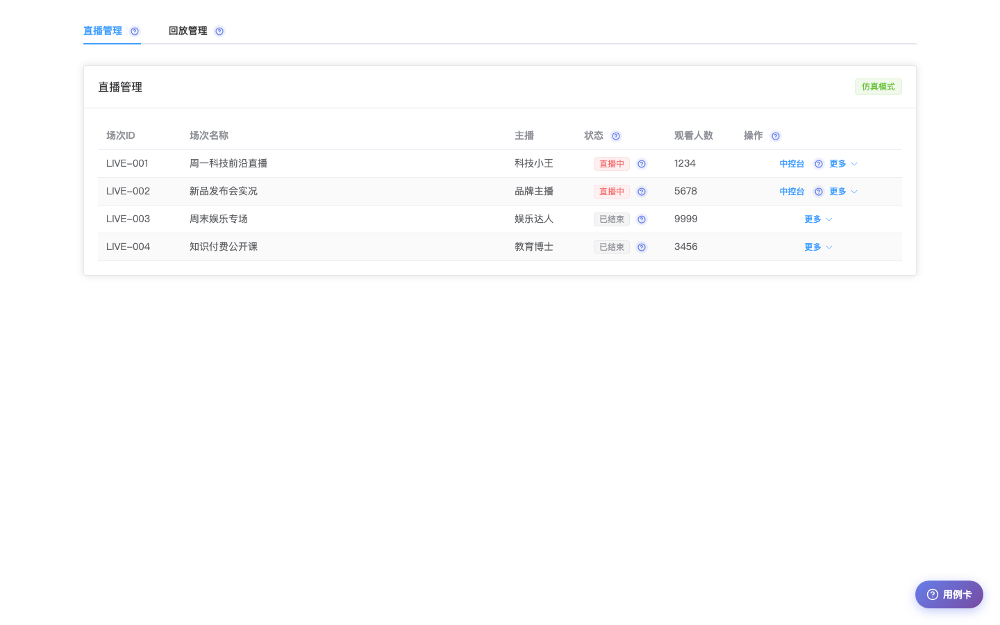
R: live_stream.status, live_stream.audit_enabled, replay.mute_status, replay.publish_status, tenant.audit_enabled
W: 无（本 UC 以路由跳转为主，不直接写入业务数据）